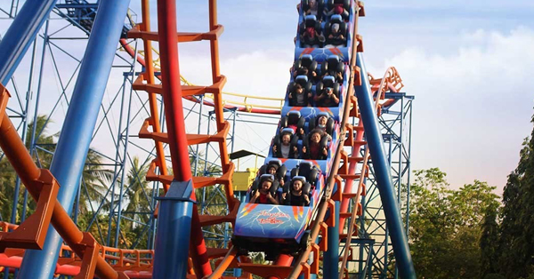

Ada banyak wahana yang populer dan wajib kalian naikin nih saat bermain ke Dufan, wahana tersebut
diantaranya:

Halilintar
Menjadi salah satu wahana favorit dan ekstrim di Dufan, wahana Halilintar mampu menguji adrenalin
Anda untuk bukan hanya merasakan seluncuran dengan loop 360°, tapi juga lintasan turunan dan tanjakan
yang tinggi dan cukup menikung. Berkapasitas 24 orang, wahana ini mampu membuat Anda serta kerabat dan
teman-teman berteriak histeris untuk melupakan segala kejenuhan dari rutinitas sehari-hari.
Bianglala
Tak lengkap kunjungan ke Dufan tanpa menikmati wahana Bianglala, sebuah kincir besar yang siap
membawa Anda ke ketinggian ± 30 meter dpl.
Berkapasitas 180 orang, wahana ini tentunya lebih tepat untuk dinikmati bersama keluarga, teman, dan
kerabat. Walaupun dapat dinikmati kapan saja, tetapi banyak pengunjung yang memilih untuk menikmati
wahana ini di sore hari karena selain dapat menikmati pemandangan pantai dari ketinggian yang paling
atas, mereka juga dapat menikmati romantisme terbenamnya matahari yang silih berganti dengan gemerlap
lampu-lampu Ancol Taman Impian.
Turangga-Rangga
Wahana Turangga- Rangga adalah sebuah komedi putar yang dilengkapi dengan 40 kuda tunggangan serta
dihiasi ribuan lampu yang membuat meriah dan semarak dan termasuk wahana klasik di Dunia Fantasi.
Permainan ini akan mengajak pengunjung memasuki romantisme saat kanak-kanak, sehingga tak heran wahana
ini digandrungi pengunjung segala usia.